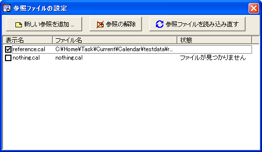
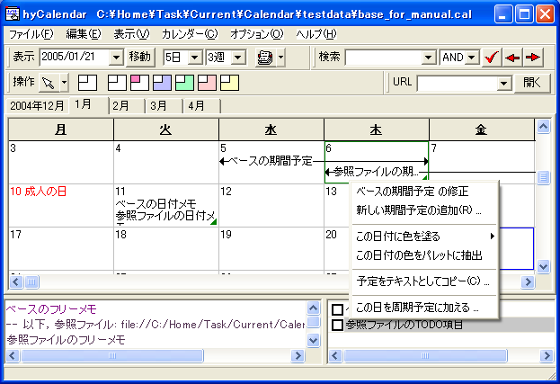
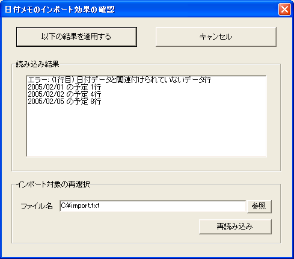
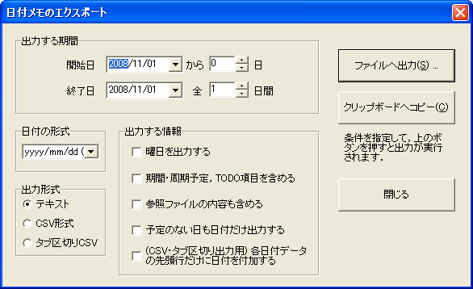
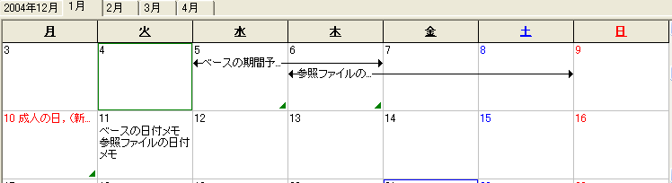

hyCalendar は，拡張子.cal のファイルに
ファイルを保存します．
ファイルを保存するには，メニュー [ファイル]-[名前を付けて保存]，[ファイル]-[上書き保存]を使用します． また，ファイルを変更している場合は， このプログラムを終了する時に， ファイルを保存するかどうか，確認のダイアログが表示されます．
オプションを設定することで， ウィンドウ位置，ツールバー表示位置，拡大率の保存ができます． これによって，プログラムを終了して再起動しても， 同じ状態から作業を再開することができます．
ファイルを開くには，メニュー[ファイル]-[開く]を選択します．
保存したファイルの内容を表示しつつも編集したくない場合 （複数の予定ファイルから共有したい内容などがある場合）， 参照ファイルを使用すると便利です．
ファイルの保存し忘れを避けたい場合， また保存確認に応答するのが面倒という場合は， プログラム終了時の ファイルの自動保存オプションを 有効にしてください．
ファイルの自動保存を有効にすると， 新規作成時など，ファイル名が確定されていないファイルの場合は プログラム終了時に [ファイルに名前を付けて保存] ダイアログが自動で表示されるようになります．
プログラム終了時にファイルを保存したくない場合は， メニューから [ファイル]-[ファイルを保存せずに終了] を 選択して終了してください．
設定ダイアログから
.cal拡張子にプログラムの関連付けを行うことで，
ファイル名をダブルクリックするだけで
開けるようになります．
自動保存と組み合わせると，
スケジュールを保存したファイルへのショートカットを
デスクトップなどに配置することで，
すばやくファイルを開き，閉じることができるようになります．
hyCalendar は，現在編集中のファイル以外に，複数の「参照ファイル」を重ねて表示することができます． 追加された "参照ファイル" は，編集できない参照のみのデータです． 参照ファイルに記述された日付メモ，期間予定，周期予定などは， 表示はされますが編集できません（編集項目として表示されません）． フリーメモ欄では明示的に参照ファイルのデータが個別に列挙されます． TODOリストには，背景色が灰色で表示されます．
参照ファイルの追加は，[ファイル]-[参照ファイルの追加 ...] によって表示される管理ダイアログから行います．
[新しい参照を追加]ボタンを押下することで，ファイルを開くダイアログが表示され， 選択したファイルを参照リストに追加することができます． ファイルが不要になった場合は，リストからファイルを選択し，[参照の解除]ボタンを押下します． また，左端に付いているチェックボックスのチェックを外すと， 無効（読み込んでも表示しない）状態にしておくことができます．
参照ファイルが削除された・アクセスできない場合， エラーメッセージは直接は表示されず， ダイアログの[状態]欄にメッセージが表示されます． 参照ファイル側の状態が変化した場合， 管理ダイアログから[参照ファイルを読み込み直す]ボタンを押下する，あるいは メインウィンドウの[ファイル]-[参照ファイルを読み込み直す] (F5キーがショートカットキーとして使えます) を選ぶことで， 最新の状態に更新することができます．
参照ファイルを１個以上持っているファイルに対しては， (.calファイル名).references というファイルが作成されます． .references ファイルには，参照しているファイルの一覧が格納されます． 現状，参照先のファイル名は絶対パスで保存しているため， ファイルを別のディレクトリに移動しても参照を維持したい場合は， ファイルのパスを更新してください．
ファイルを重ねた場合の表示例を次に示します．
hyCalendar は，テキストファイルに特定の形式で記述されたファイルの内容を 日付メモとして取り込む機能を備えています．
[ファイル]-[日付メモのインポート]を選択すると， ファイル選択のダイアログが表示され，ファイルを選択することになります． ファイルを選択すると，その内容についての情報が， 次のようなダイアログとして表示されます．
[読み込み結果]欄には， どの日付のデータがどれだけ見つかったか， およびエラーの情報が表示されます． もし，問題がなければ，[以下の結果を適用する] ボタンをクリックし，インポートを取りやめるのであれば， [キャンセル]ボタンでダイアログを閉じてください．
ファイル名の間違いや，ファイル内部のエラーを訂正した場合には， [インポート対象の再選択]枠に表示されている[再読み込み]ボタンでの 再読み込みが可能です． また，[参照]ボタンを使うと，ファイル選択ダイアログからファイル名を 選びなおすこともできます．
以下，インポートによって受理されるテキストの形式です．
2006/1/1 １件目． これは１月１日の予定です． 2006/1/2 ここはもう１月２日の定義になっています． 空行が１行以上続いた後で，かつ，日付だけの行が存在した場合に 新しいデータだとみなされています． ここも１月２日の予定となります． ただし，空行はインポート時には省略されます． 2006/1/3 この行は1/2の予定の一部とみなされます． 2006/1/5 ここは１月５日の予定です． 2006/1/4 ここは１月４日の予定です（どんな順序で定義するかは自由です）．
hyCalendar は，指定した期間の日付メモやその他の予定を 一括してテキスト変換する機能を備えています． [ファイル]-[日付メモのエクスポート]を選択すると， エクスポートダイアログが表示されます．
以下の項目を設定し，[ファイルへ出力] あるいは [クリップボードへコピー] を選択すると，エクスポートが実行されます．
| 項目名 | 説明 |
|---|---|
| 出力する期間 | 開始日，終了日から構成されます． 開始日より終了日のほうが過去の日付であっても有効ですが， 出力は時間順序（過去の日付から）に固定されています． 期間予定の場合と同様，補助インタフェースとして， 日数による入力が可能です． |
| 日付の形式 | 各日付の出力形式を選択します． 西暦・和暦で，年を付けるかどうか， 月日の十の位を0で埋めるかどうか，を選ぶことができます． |
| 出力形式 | テキスト形式，CSV形式，タブ区切りCSVから選択可能です． 例については後述を参照してください． CSV形式のとき，タブ区切りCSVのときは，予定文字列に区切り文字("," あるいはタブ) が含まれる場合，文字列はクォーテーションでくくられます． |
| [曜日を出力する] | この項目のチェックを有効にすると， エクスポートした各日付の後ろに曜日が付与されるようになります． |
| [期間・周期予定，TODO項目を含める] | この項目のチェックを有効にすると， 期間予定，周期予定， 日付名として設定されている周期予定， 日付を含んだTODO項目をエクスポートするようになります． |
| [参照ファイルの内容も含める] | この項目のチェックを有効にすると， 参照ファイルのデータも同時に出力することができます． |
| [予定のない日も日付だけ出力する] | 通常，日付メモなどの予定が一切存在しない場合， その日付を飛ばして出力します． この項目のチェックを有効にすると， 日付だけ（存在するなら祝日名も含めて）の空の項目を出力します． |
| [各日付データの先頭行だけに日付を付加する] | この項目は，CSV形式あるいはタブ区切りCSV形式を選択した場合にのみ有効です． 通常，各行に，"日付[区切り文字]日付メモの内容" という形式で 出力されますが，この設定を有効にすると， 日付の出力をできるだけ省略します． 以下の出力例も参考にしてください． |
hyCalendar には，バッチ処理機能として， 特定のオプションを指定することで， 通常のウィンドウを開かず， データのエクスポートだけを行う機能もあります． 詳しくは コマンドラインからのエクスポート を参照してください．
以下に，エクスポート出力のサンプルを示します．
出力するファイルは次のスクリーンショットの通りです．

基本設定: 範囲 = 2005/01/05 〜 2005/01/12，タブ位置 = 8
-- テキスト形式，他オプションなし
2005/01/11
ベースの日付メモ
-- テキスト形式，予定のない日も日付だけ出力する
2005/01/05
2005/01/06
2005/01/07
2005/01/08
2005/01/09
2005/01/10
成人の日
2005/01/11
ベースの日付メモ
2005/01/12
-- 日付形式 m/d, CSV 形式, 期間・周期予定，TODO項目含む
1/5,ベースの期間予定 (1/5 - 1/6)
1/6,ベースの期間予定 (1/5 - 1/6)
1/10,'成人の日, （新しい予定）'
1/11,ベースの日付メモ
-- 日付形式 m/d, タブ区切りCSV 形式,
期間・周期予定，TODO項目含む，参照ファイルを含む
1/5 ベースの期間予定 (1/5 - 1/6)
1/6 ベースの期間予定 (1/5 - 1/6)
1/6 参照ファイルの期間予定 (1/6 - 1/8)
1/7 参照ファイルの期間予定 (1/6 - 1/8)
1/8 参照ファイルの期間予定 (1/6 - 1/8)
1/10 成人の日, （新しい予定）
1/11 ベースの日付メモ
1/11 参照ファイルの日付メモ
-- 日付形式 m/d, タブ区切りCSV 形式,
期間・周期予定，TODO項目含む，参照ファイルを含む，
日付の先頭行だけに日付を付加
1/5 ベースの期間予定 (1/5 - 1/6)
1/6 ベースの期間予定 (1/5 - 1/6)
参照ファイルの期間予定 (1/6 - 1/8)
1/7 参照ファイルの期間予定 (1/6 - 1/8)
1/8 参照ファイルの期間予定 (1/6 - 1/8)
1/10 成人の日, （新しい予定）
1/11 ベースの日付メモ
参照ファイルの日付メモ